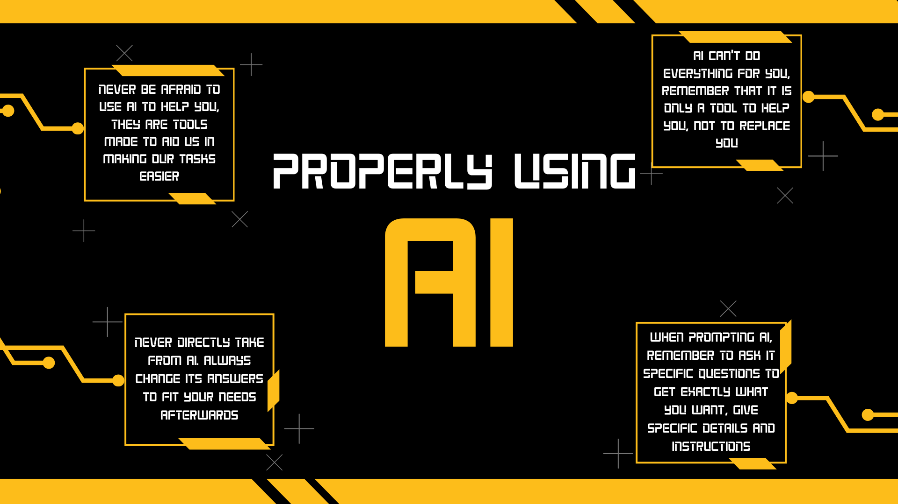
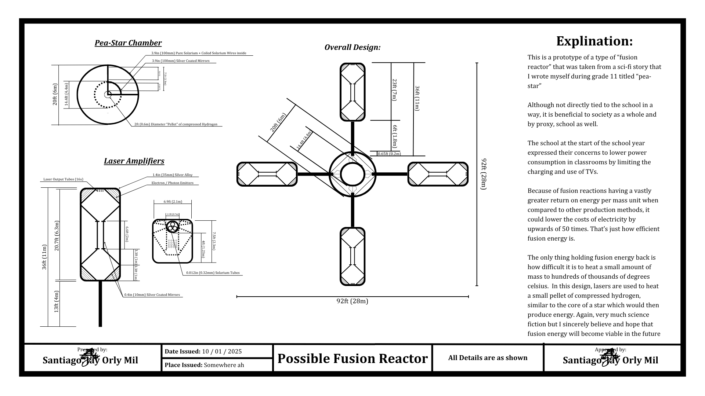

Outputs
AI Poster (2nd quarter performance - Text Media)

A Short poster about how to properly use AI
A poster about how to properly use AI, mostly for an output in the second quarter regarding typefaces and posisioning of text as well as graphic design
Fusion Reactor (2nd quarter performance - Invention)

A prototype from one of my sci-fi stories
This is a schematic from one of my unpublished stories made during grade 11. The story itself was centered around a scientist designing a way of producing energy more cheaply for everyone. Thus coming up with a design for a fusion reactor, being the most efficient way of producing energy estimated to be over a million times more efficient than fossil fuels and about 50 times more efficient than nuclear fusion. This one in particular was perfect as the topic in MIL was about an invension that could help the school, and I recalled the limitation of charging and use of TVs in classrooms at the start of grade 11 because of how high the electicity bill for NASYO was, hence why I thought this fusion reactor I made a year ago was perfect for the design.
Shapes Calculator

This is the famous shapes calculator! (original python version.)
"Famous" in a sense that it won 1st place in nasyo's first ever programming competition during SY 2024-2025. It was a paired competition where with the help of my first and longest friend: Geon, (I call him Ge and he is in section B, you may know him as Dulaca) we won first place when we were just grade 11 against grade 12 competitors!
Cuppochino